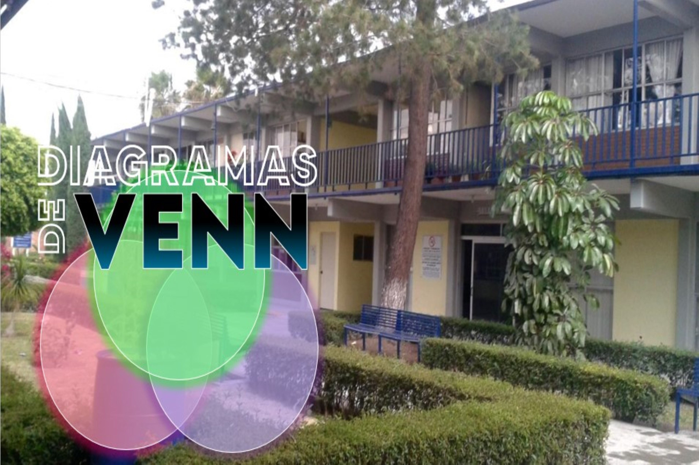
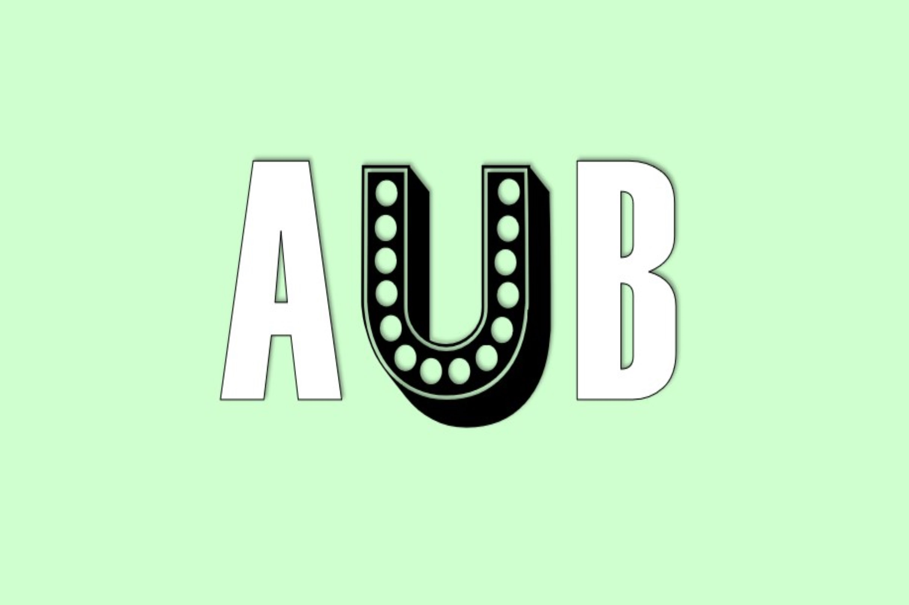
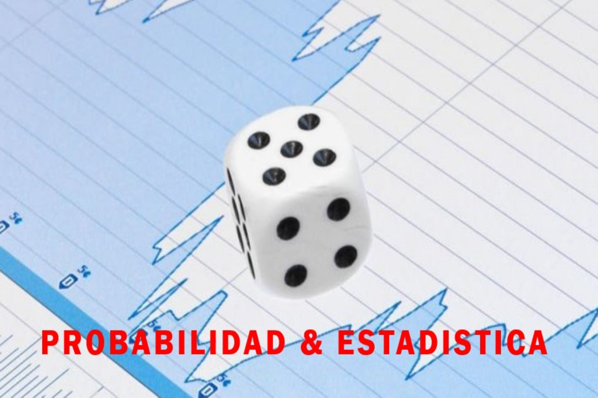
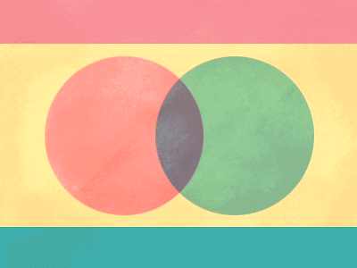

-

-

-

-

-

Sobre este trabajo ,lograremos reforzar y practicar nuestro conocimiento previamente aprendido ,sobre los CONJUNTOS DE VENN e investigar un poco más ,sobre su elaboración hasta la ectualidad.

Mozqueda López Orlando Isaac•Rico Cruz Laura Ameyalli•Rodriguez Herrera Hilario Martin
6F
CETis.62
Fecha de elaboración el día 06 de Junio del 2022.
Especialidad:Programación.